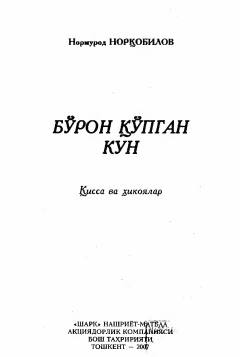

BQInson va tabiat munosabatlarini o'zida mujassam etgan ta'sirchan qissa va hikoyalar to'plami.
Mazkur to'plamga taniqli yozuvchi Normurod Norqobilovning qissa va hikoyalari kiritilgan bo'lib, ularda tabiat va inson o'rtasidagi murakkab munosabatlar, insoniy tuyg'ular hamda hayot haqiqatlari yorqin aks etgan. Adib asarlarida insonning tabiat bilan uyg'unligi, ma'naviy qadriyatlar va ruhiy kechinmalar ta'sirchan tarzda ochib berilgan.